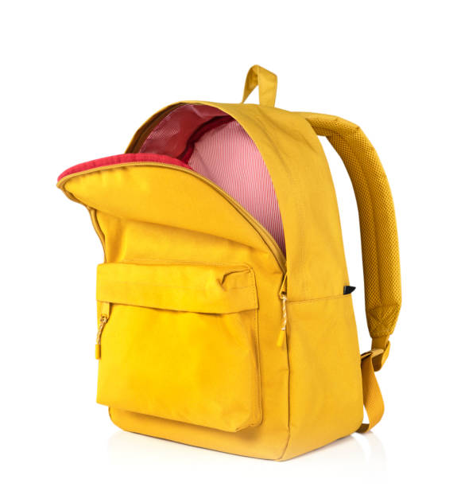
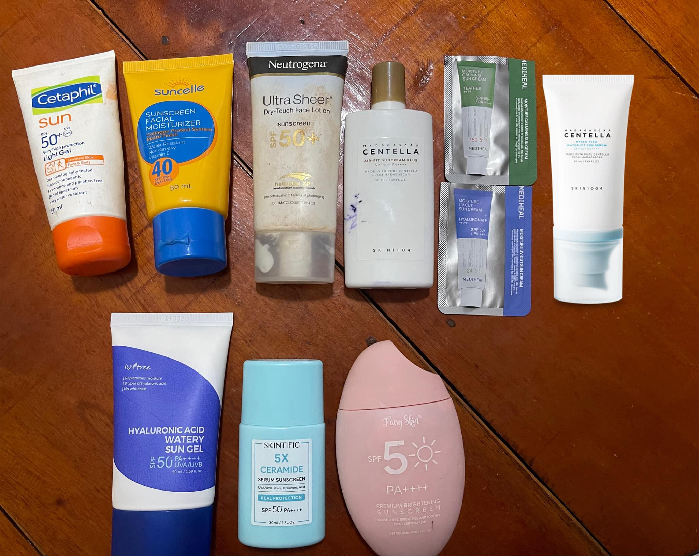
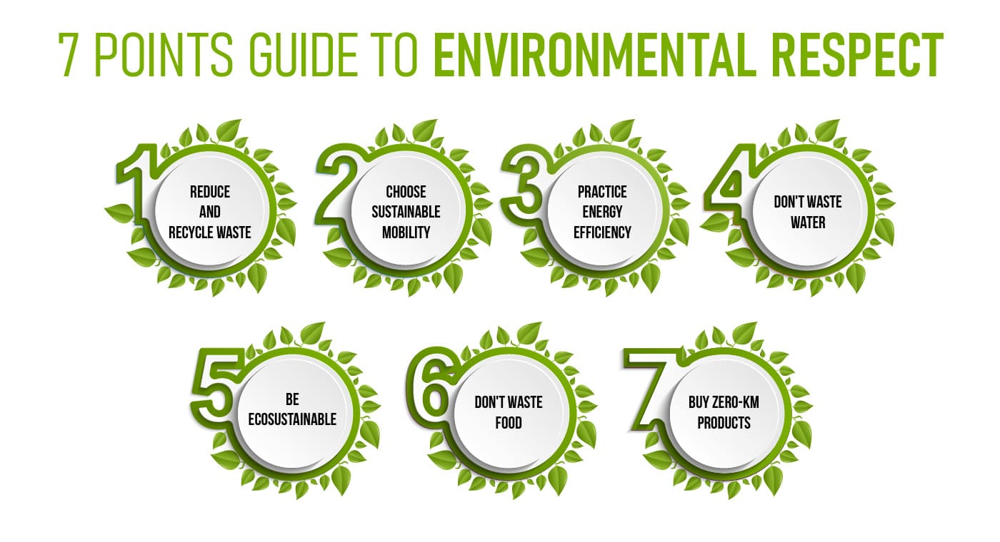
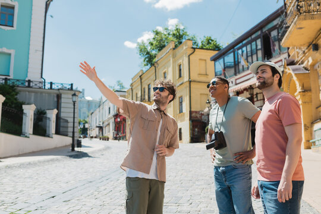

Planning your trip to Surigao del Sur? Here are some helpful tips and frequently asked questions to make your visit smooth, safe, and truly memorable.
The best time to visit Surigao del Sur is between November and May during the dry season, when the weather is clear and the seas are calm — perfect for island hopping, diving, and waterfall visits. The wet season runs from June to October and can bring heavy rains and rough seas, which may affect travel to some attractions. Always check weather conditions before your trip.
Keep these in mind before you go!


Pack light but smart. Bring waterproof sandals or aqua shoes for river and waterfall visits, sunscreen, a reusable water bottle, insect repellent, and cash since most attractions and small towns do not have ATMs or accept card payments. A dry bag or waterproof case for your phone is also highly recommended especially during island hopping and river tours.
Be a responsible traveler!

Surigao del Sur's natural attractions are protected ecosystems. Swimming is restricted in certain areas of the Enchanted River to preserve its delicate underwater environment. Do not litter, do not disturb wildlife, and always follow the rules set by local tourism offices. Bringing your own reusable bags and containers helps reduce plastic waste in the communities you visit.
Stay safe during your adventure!

Always travel with a registered tour guide when exploring caves, rivers, or remote areas. Life jackets are available for rent at the Enchanted River and are recommended for non-swimmers. Inform your accommodation of your daily itinerary. Keep emergency contact numbers handy, including the local tourism office and barangay hall of the area you are visiting.